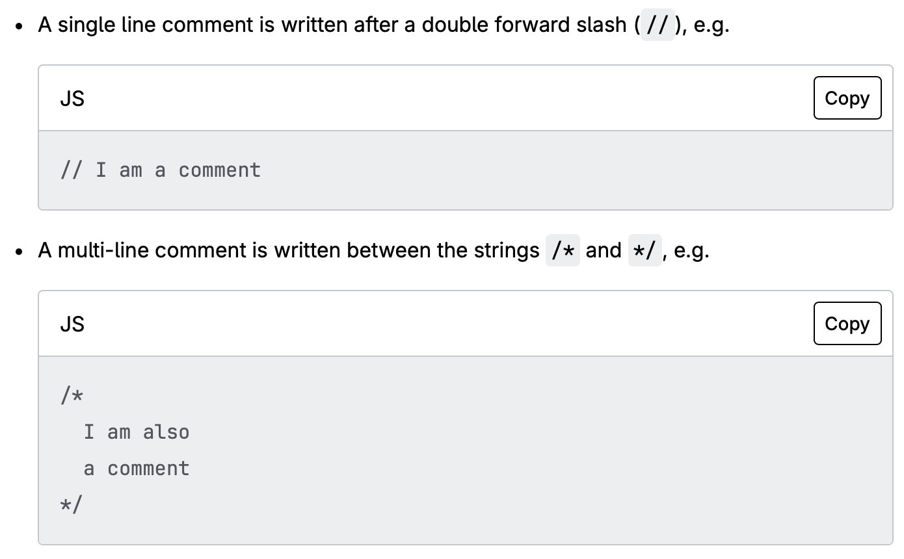

SEE CONSOLE OUTPUT FOR THE JS SCRIPT ASSIGNMENT TASKS (Part 1 of the assignment)
Part 2 of the assignment
- A very common use of JavaScript is to dynamically modify HTML and CSS to update a user interface, via the Document Object Model API (as mentioned above).
- **When the browser encounters a block of JavaScript, it generally runs it in order, from top to bottom.
- You might hear the terms interpreted and compiled in the context of programming.
- Interpreted languages, the code is run from top to bottom and the result of running the code is immediately returned. You don't have to transform the code into a different form before the browser runs it. The code is received in its programmer-friendly text form and processed directly from that.
- Compiled languages on the other hand are transformed (compiled) into another form before they are run by the computer. For example, C/C++ are compiled into machine code that is then run by the computer. The program is executed from a binary format, which was generated from the original program source code.
- **JavaScript is a lightweight interpreted programming language.
- most modern JavaScript interpreters actually use a technique called just-in-time compiling (JIT) to improve performance
- the JavaScript source code gets compiled into a faster, binary format while the script is being used
- However, JavaScript is still considered an interpreted language, since the compilation is handled at run time
- Client-side Code: code that is run on the user's computer — when a web page is viewed, the page's client-side code is downloaded, then run and displayed by the browser.
- Server-side Code: run on the server, then its results are downloaded and displayed in the browser. Examples of popular server-side web languages include PHP, Python, Ruby, C#, and even JavaScript! JavaScript can also be used as a server-side language, for example in the popular Node.js environment.
- **Inline JS works aswell like CSS does!
- Ex: "<button onclick="createParagraph()">Click me!</button>"
- N.B.: This is bad practice, avoid doing at all costs

You can comment single line using // or multi line using /* .. .. .. */

- Refer to the examples in the index file to see JS scripts outputted in the console
- There are two limitations on variable names in JavaScript:
- The name must contain only letters, digits, or the symbols $ and _.
- The first character must not be a digit.
- capital-named constants are only used as aliases for “hard-coded” values. lowercase are constants calculated at runtime.
- Refer to the examples in the index file to see JS scripts outputted in the console
- Refer to the examples in the index file to see JS scripts outputted in the console